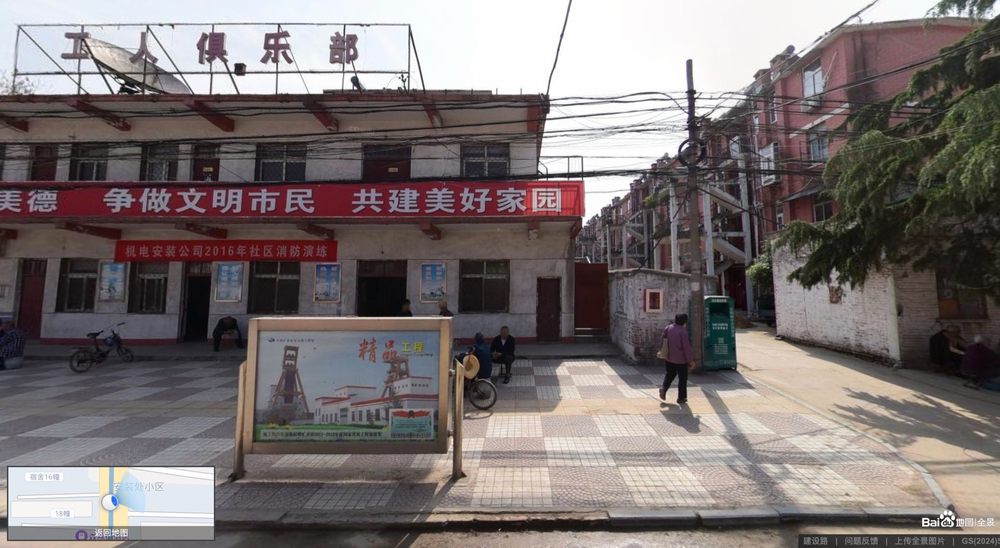
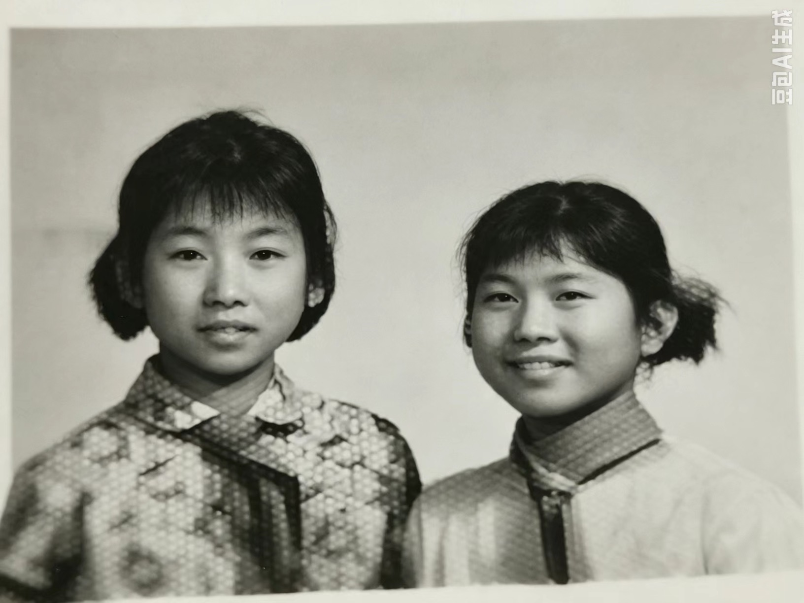

清末民初至1955年
家庭背景与成家
清末民初，朱守芝的爷爷曾任河南省商丘市柘城县县令，家中有耕读传统。朱道安与朱刘氏育有两个女儿，朱守芝是长女。由于家中没有儿子，她较早承担家庭事务；幼年读过4年私塾，1955年在28岁时与李开训结婚。
20世纪中期的社会变动中，朱家在淮南朱家岗的宅邸被占，家藏书籍和器物散失，部分线装书后来在社会运动中被毁。李开训出生于寿县堰口集，后来成为煤矿工人，前后在井下采煤30多年。两人的家庭生活由此与两淮煤矿建设紧密相连。
李氏／朱氏家族档案
李开训与朱守芝一家
李氏先祖于明初由山东迁至寿县堰口集，朱氏一支生活在淮南朱家岗。1955年，李开训与朱守芝成家，育有五女一子，一家的生活与两淮煤矿建设紧密相连。家庭经历了1960年的饥荒与丧亲，后来随工作调动由淮南迁居宿州，子女也曾在不同城市求学和工作。几名子女分别从事劳资、财会和医疗工作，近年这一代兄弟姐妹主要生活在宿州和昆山。
2026年8月12日更新
选择任一家庭，可以单独展开或收起这一支。
 长子
李开训
出生于安徽省淮南市寿县堰口集；井下采煤30多年；后随单位迁居宿州
长子
李开训
出生于安徽省淮南市寿县堰口集；井下采煤30多年；后随单位迁居宿州
 配偶
朱守芝
出生于淮南市谢家集区朱家岗；家中长女，幼年读过4年私塾
展开或收起李开训与朱守芝的后代
配偶
朱守芝
出生于淮南市谢家集区朱家岗；家中长女，幼年读过4年私塾
展开或收起李开训与朱守芝的后代
 四女
李平
1965年生；淮北市商务局会计师；现居昆山
配偶
任东风
1992年与李平结婚
展开或收起李平与任东风的后代
四女
李平
1965年生；淮北市商务局会计师；现居昆山
配偶
任东风
1992年与李平结婚
展开或收起李平与任东风的后代
 儿子
任泽宇
长女
朱守芝
出生于淮南市谢家集区朱家岗；家中长女，幼年读过4年私塾
儿子
任泽宇
长女
朱守芝
出生于淮南市谢家集区朱家岗；家中长女，幼年读过4年私塾
这段家史记录了李开训、朱守芝一家在社会变迁、煤矿建设与城市迁徙中的生活轨迹，也呈现了几代人在教育、工作和家庭责任方面的选择。
清末民初至1955年
清末民初，朱守芝的爷爷曾任河南省商丘市柘城县县令，家中有耕读传统。朱道安与朱刘氏育有两个女儿，朱守芝是长女。由于家中没有儿子，她较早承担家庭事务；幼年读过4年私塾，1955年在28岁时与李开训结婚。
20世纪中期的社会变动中，朱家在淮南朱家岗的宅邸被占，家藏书籍和器物散失，部分线装书后来在社会运动中被毁。李开训出生于寿县堰口集，后来成为煤矿工人，前后在井下采煤30多年。两人的家庭生活由此与两淮煤矿建设紧密相连。
1960年
1960年饥荒期间，朱守芝的父母朱道安、朱刘氏先后去世。双胞胎长女李克珍也因饥饿去世，时年4岁。李开训继续从事井下劳动，他所得的口粮一度成为家庭维持生活的重要来源。
1960年代末至1970年代
上山下乡时期，李玉珍曾在农村生活和劳动约4年，李坤下乡7个月。李玉珍后来在农村工地从事线路铺设等体力工作。家人为他们返城和就业多方奔走。
李父与吴父是同乡好友。返城后，李玉珍先在宿州三十三处工作，后来调入淮北矿务局一机厂，长期从事劳动工资工作，负责人事、编制和工资等业务。李玉霞与彭学俭两家为邻，二人自幼相识。
迁居宿州以后
随李开训的工作调动，一家由淮南迁至宿州三十三处四工区安装机电，最初住在安装处招待所的一间房内。为给女儿们留下居住和学习空间，李开训与朱守芝曾在门外搭建简易住处，把房间留给李玉珍、李玉霞、李平和李惠。
安装处地处宿州，行政、人事及部分教育事务则归淮北煤炭系统管理。职工子女的学籍和升学安排需要在两地之间协调。李玉霞、李平和李惠参加中考、高考时，都曾返回淮北报名和应考，这种跨市安排增加了交通和手续方面的负担。

改革开放初期以后
当时，正式工与临时工在就业保障和待遇方面存在较大差别，教育和专业训练因此成为家庭的重要选择。李开训提前退休后，李玉霞按当时的接班政策进入安装处，随后考入徐州煤矿工业学校学习会计，并在安装处从事会计工作至退休。
在家庭经济紧张的情况下，家里筹集1200元学费，支持李惠自费就读卫校。她在校期间曾任班长和毕业实习队长，后来成为昆山市中医医院护士。李玉珍在淮北矿务局一机厂从事劳动工资工作，李坤在三十四处钻井队工作至退休，李平成为淮北市商务局会计师。几名子女分别在人事、财会和医疗岗位任职，逐步建立起较稳定的职业生活。

这些记录包括李氏自明初以来由山东至堰口集的迁徙、朱氏在淮南市谢家集区朱家岗的生活经历，以及两家后来的生活足迹。
家族地理
地图同时展示能够明确定位的具体地点与较大范围的区域锚点，帮助理解几代人的迁徙方向。
正在加载OpenFreeMap底图。下方迁徙记录无需地图即可阅读。
明初大移民
李氏先祖由山东老鸹巷迁至安徽省淮南市寿县堰口集。
先祖迁入
朱氏先祖迁入淮南市谢家集区朱家岗。
后世
朱道安曾在此任职。
相关人物：朱道安
后世
朱守芝的爷爷曾任河南省商丘市柘城县县令。
相关人物：朱守芝的爷爷
后来
朱家在打地主时期被人抢夺了宅邸。
早年
李开训出生于此。
相关人物：李开训
早年
朱守芝出生于此。
相关人物：朱守芝
子女出生
六名子女均出生于此；这里是当地的三十三处留守处。
相关人物：李克珍、李玉珍、李坤、李玉霞、李平、李惠
迁居宿州
一家后来迁至三十三处机关，当时所在单位为三十三处四工区安装机电。
单位沿革
三十三处四工区安装机电后来分离为机电安装处，单位地址仍在此处。
其后
兄弟姐妹曾分散在这些地区。
近十年
李玉霞近年居住在宿州市埇桥区建设路安装处小区。
相关人物：李玉霞
近十年
李玉珍、李坤、李平和李惠安居苏州昆山。
相关人物：李玉珍、李坤、李平、李惠